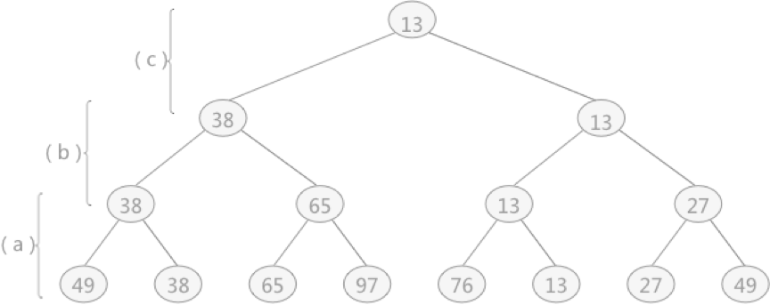
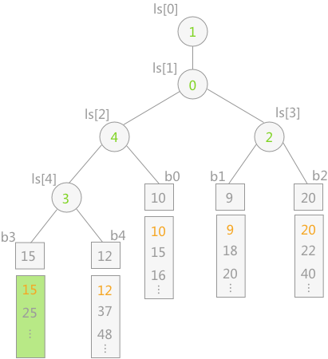

多路平衡归并排序（胜者树、败者树）算法详解
通过上一节对于外部排序的介绍得知：对于外部排序算法来说，其直接影响算法效率的因素为读写外存的次数，即次数越多，算法效率越低。若想提高算法的效率，即减少算法运行过程中读写外存的次数，可以增加 k –路平衡归并中的 k 值。
但是经过计算得知，如果毫无限度地增加 k 值，虽然会减少读写外存数据的次数，但会增加内部归并的时间，得不偿失。
例如在上节中，对于 10 个临时文件，当采用 2-路平衡归并时，若每次从 2 个文件中想得到一个最小值时只需比较 1 次；而采用 5-路平衡归并时，若每次从 5 个文件中想得到一个最小值就需要比较 4 次。以上仅仅是得到一个最小值记录，如要得到整个临时文件，其耗费的时间就会相差很大。
为了避免在增加 k 值的过程中影响内部归并的效率，在进行 k-路归并时可以使用“败者树”来实现，该方法在增加 k 值时不会影响其内部归并的效率。
在树形选择排序一节中，对于无序表
这棵树与败者树正好相反，是一棵“胜者树”。因为树中每个非终端结点（除叶子结点之外的其它结点）中的值都表示的是左右孩子相比较后的较小值（谁最小即为胜者）。例如叶子结点 49 和 38 相对比，由于 38 更小，所以其双亲结点中的值保留的是胜者 38。然后用 38 去继续同上层去比较，一直比较到树的根结点。
而败者树恰好相反，其双亲结点存储的是左右孩子比较之后的失败者，而胜利者则继续同其它的胜者去比较。
例如还是图 1 中，叶子结点 49 和 38 比较，38 更小，所以 38 是胜利者，49 为失败者，但由于是败者树，所以其双亲结点存储的应该是 49；同样，叶子结点 65 和 97 比较，其双亲结点中存储的是 97 ，而 65 则用来同 38 进行比较，65 会存储到 97 和 49 的双亲结点的位置，38 继续做后续的胜者比较，依次类推。

当最终胜者判断完成后，只需要更新叶子结点 b3 的值，即导入关键字 15，然后让该结点不断同其双亲结点所表示的关键字进行比较，败者留在双亲结点中，胜者继续向上比较。
例如，叶子结点 15 先同其双亲结点 ls[4] 中表示的 b4 中的 12 进行比较，12 为胜利者，则 ls[4] 改为 15，然后 12 继续同 ls[2] 中表示的 10 做比较，10 为胜者，然后 10 继续同其双亲结点 ls[1] 表示的 b1（关键字 9）作比较，最终 9 为胜者。整个过程如下图所示：
但是经过计算得知，如果毫无限度地增加 k 值，虽然会减少读写外存数据的次数，但会增加内部归并的时间，得不偿失。
例如在上节中，对于 10 个临时文件，当采用 2-路平衡归并时，若每次从 2 个文件中想得到一个最小值时只需比较 1 次；而采用 5-路平衡归并时，若每次从 5 个文件中想得到一个最小值就需要比较 4 次。以上仅仅是得到一个最小值记录，如要得到整个临时文件，其耗费的时间就会相差很大。
为了避免在增加 k 值的过程中影响内部归并的效率，在进行 k-路归并时可以使用“败者树”来实现，该方法在增加 k 值时不会影响其内部归并的效率。
败者树实现内部归并
败者树是树形选择排序的一种变形，本身是一棵完全二叉树。在树形选择排序一节中，对于无序表
{49，38，65，97，76，13，27，49}创建的完全二叉树如图 1 所示，构建此树的目的是选出无序表中的最小值。这棵树与败者树正好相反，是一棵“胜者树”。因为树中每个非终端结点（除叶子结点之外的其它结点）中的值都表示的是左右孩子相比较后的较小值（谁最小即为胜者）。例如叶子结点 49 和 38 相对比，由于 38 更小，所以其双亲结点中的值保留的是胜者 38。然后用 38 去继续同上层去比较，一直比较到树的根结点。

图 1 胜者树
而败者树恰好相反，其双亲结点存储的是左右孩子比较之后的失败者，而胜利者则继续同其它的胜者去比较。
例如还是图 1 中，叶子结点 49 和 38 比较，38 更小，所以 38 是胜利者，49 为失败者，但由于是败者树，所以其双亲结点存储的应该是 49；同样，叶子结点 65 和 97 比较，其双亲结点中存储的是 97 ，而 65 则用来同 38 进行比较，65 会存储到 97 和 49 的双亲结点的位置，38 继续做后续的胜者比较，依次类推。
胜者树和败者树的区别就是：胜者树中的非终端结点中存储的是胜利的一方；而败者树中的非终端结点存储的是失败的一方。而在比较过程中，都是拿胜者去比较。
图 2 败者树
如图 2 所示为一棵 5-路归并的败者树，其中 b0—b4 为树的叶子结点，分别为 5 个归并段中存储的记录的关键字。 ls 为一维数组，表示的是非终端结点，其中存储的数值表示第几归并段（例如 b0 为第 0 个归并段）。ls[0] 中存储的为最终的胜者，表示当前第 3 归并段中的关键字最小。当最终胜者判断完成后，只需要更新叶子结点 b3 的值，即导入关键字 15，然后让该结点不断同其双亲结点所表示的关键字进行比较，败者留在双亲结点中，胜者继续向上比较。
例如，叶子结点 15 先同其双亲结点 ls[4] 中表示的 b4 中的 12 进行比较，12 为胜利者，则 ls[4] 改为 15，然后 12 继续同 ls[2] 中表示的 10 做比较，10 为胜者，然后 10 继续同其双亲结点 ls[1] 表示的 b1（关键字 9）作比较，最终 9 为胜者。整个过程如下图所示：

注意：为了防止在归并过程中某个归并段变为空，处理的办法为：可以在每个归并段最后附加一个关键字为最大值的记录。这样当某一时刻选出的冠军为最大值时，表明 5 个归并段已全部归并完成。（因为只要还有记录，最终的胜者就不可能是附加的最大值）
败者树内部归并的具体实现
#include <stdio.h>
#define k 5
#define MAXKEY 10000
#define MINKEY -1
typedef int LoserTree[k];//表示非终端结点，由于是完全二叉树，所以可以使用一维数组来表示
typedef struct {
int key;
}ExNode,External[k+1];
External b;//表示败者树的叶子结点
//a0-a4为5个初始归并段
int a0[]={10,15,16};
int a1[]={9,18,20};
int a2[]={20,22,40};
int a3[]={6,15,25};
int a4[]={12,37,48};
//t0-t4用于模拟从初始归并段中读入记录时使用
int t0=0,t1=0,t2=0,t3=0,t4=0;
//沿从叶子结点b[s]到根结点ls[0]的路径调整败者树
void Adjust(LoserTree ls,int s){
int t=(s+k)/2;
while (t>0) {
//判断每一个叶子结点同其双亲结点中记录的败者的值相比较，调整败者的值，其中 s 一直表示的都是胜者
if (b[s].key>b[ls[t]].key) {
int swap=s;
s=ls[t];
ls[t]=swap;
}
t=t/2;
}
//最终将胜者的值赋给 ls[0]
ls[0]=s;
}
//创建败者树
void CreateLoserTree(LoserTree ls){
b[k].key=MINKEY;
//设置ls数组中败者的初始值
for (int i=0; i<k; i++) {
ls[i]=k;
}
//对于每一个叶子结点，调整败者树中非终端结点中记录败者的值
for (int i=k-1; i>=0; i--) {
Adjust(ls, i);
}
}
//模拟从外存向内存读入初始归并段中的每一小部分
void input(int i){
switch (i) {
case 0:
if (t0<3) {
b[i].key=a0[t0];
t0++;
}else{
b[i].key=MAXKEY;
}
break;
case 1:
if (t1<3) {
b[i].key=a1[t1];
t1++;
}else{
b[i].key=MAXKEY;
}
break;
case 2:
if (t2<3) {
b[i].key=a2[t2];
t2++;
}else{
b[i].key=MAXKEY;
}
break;
case 3:
if (t3<3) {
b[i].key=a3[t3];
t3++;
}else{
b[i].key=MAXKEY;
}
break;
case 4:
if (t4<3) {
b[i].key=a4[t4];
t4++;
}else{
b[i].key=MAXKEY;
}
break;
default:
break;
}
}
//败者树的建立及内部归并
void K_Merge(LoserTree ls){
//模拟从外存中的5个初始归并段中向内存调取数据
for (int i=0; i<=k; i++) {
input(i);
}
//创建败者树
CreateLoserTree(ls);
//最终的胜者存储在 is[0]中，当其值为 MAXKEY时，证明5个临时文件归并结束
while (b[ls[0]].key!=MAXKEY) {
//输出过程模拟向外存写的操作
printf("%d ",b[ls[0]].key);
//继续读入后续的记录
input(ls[0]);
//根据新读入的记录的关键字的值，重新调整败者树，找出最终的胜者
Adjust(ls,ls[0]);
}
}
int main(int argc, const char * argv[]) {
LoserTree ls;
K_Merge(ls);
return 0;
}
运行结果：
6 9 10 12 15 15 16 18 20 20 22 25 37 40 48
总结
本节介绍了通过使用败者树来实现增加 k-路归并的规模来提高外部排序的整体效率。但是对于 k 值得选择也并不是一味地越大越好，而是需要综合考虑选择一个合适的 k 值。关注公众号「站长严长生」，在手机上阅读所有教程，随时随地都能学习。内含一款搜索神器，免费下载全网书籍和视频。

微信扫码关注公众号